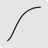
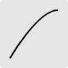
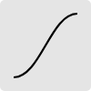

|
New Perspectives on HTML5 and CSS3, 8th Edition Tutorial 8 |
Transition Timing
This page demonstrates how timing affects transition. Set the duration of the transition in the input box below. Move your mouse pointer over the Start box and view the transition of each figure under a different timing function. The transition is applied to the left, border-radius, and filter styles of each object.
CSS Transition Timings
Set Duration
secondsTiming Options
| Timing Function | Description |
|---|---|
|
 ease |
Start slow, speed up, and then change very slowly at the end (the default) |
|
linear |
Maintain a constant rate of change through the duration |
 ease-in |
Start slow and then speed up to the end |
|
 ease-out |
Start fast and then slow down to the end |
|
 ease-in-out |
Start slower than ease timing, speed up and slow down towards the end |
START
Hover the Mouse Pointer over the Starting Box to Start the Transition
div#track img#one {transition: left border-radius filter 4s ease;}
div#track img#two {transition: left border-radius filter 4s linear;}
div#track img#three {transition: left border-radius filter 4s ease-in;}
div#track img#four {transition: left border-radius filter 4s ease-out;}
div#track img#five {transition: left border-radius filter 4s ease-in-out;}
div#track img#two {transition: left border-radius filter 4s linear;}
div#track img#three {transition: left border-radius filter 4s ease-in;}
div#track img#four {transition: left border-radius filter 4s ease-out;}
div#track img#five {transition: left border-radius filter 4s ease-in-out;}